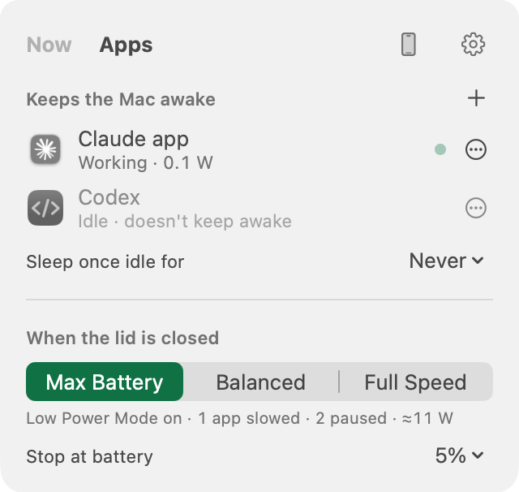

Close the lid.
Your AI keeps working.
Awake while your agents work. Asleep when they're done.
Download for Mac
How it works
Install
On your Mac, PC or Linux laptop.
Start your agent
Claude Code, Codex, Cursor and more are found on their own.
Close the lid
It keeps working, then sleeps when it's done.
Less battery, lid shut
One test on an M5 Max MacBook Pro with iOS simulators open. Yours will differ, and Nocturnal measures your own.
On the computer you work on
You're in control
Knows when Claude Code needs you
Working, waiting for your approval, or finished, straight from Claude Code.
Approve everything, until it's done
One switch lets your agents run without asking. It turns itself off when the work finishes.
Saves battery with the lid shut
Pauses apps you aren't using and turns on Low Power Mode.
Battery and heat limits
Sleeps at your battery limit or if it gets too hot.
Puts everything back
Open the lid and it's all as it was. A watchdog covers crashes.


Control it from your phone
Everything the menu bar does, from anywhere: how long it stays awake, Sleep and Wake, which apps keep it awake or get paused, and every setting. On your computer, open Nocturnal and choose Pair a Phone, then scan.
- iPhone app: coming to the App Store.
- Any phone, today: the phone page. Add it to your Home Screen and it opens like an app.
- End-to-end encrypted, with a key for each phone you can revoke.
Your AI can use it too
Connect it in Settings › Agents, then give your agent this prompt.
Nocturnal is installed on this laptop. It keeps the machine awake with the lid closed while you work, and cuts power use while the lid is shut. You can control all of it through the nocturnal MCP tools (or the nocturnal command). Set it up for me: 1. Read Nocturnal's settings and power report to see every setting and what is using power right now. 2. Ask me, in one short message: which apps must keep running at full speed with the lid shut (music, calls, a local model, Docker...), and whether it should stay awake only while agents work or always. 3. Apply the strongest savings that don't touch what I named: preset max_battery, pausing simulators and background audio, low power, and per-app rules. 4. If my lid is closed, run Nocturnal's power test and tell me what the savings are worth in watts. 5. From now on, keep the laptop awake through Nocturnal before long work and release it when done. Never turn off the heat guard or lower the battery limit; Nocturnal won't let you, and that's on purpose.
Questions
Safe in a bag?
It sleeps if it gets hot or the battery runs low.
What does it change?
Sleep, Low Power Mode, brightness and idle apps. Opening the lid puts it all back.
Windows and Linux?
Both work, in beta: the same engine as the Mac, with a tray icon instead of the menu bar panel. Measuring savings is Mac-only for now.
Why does it ask for a password?
Once, on the Mac, to allow only the few commands that switch sleep and Low Power Mode. Delete the app and that permission removes itself.
Lost internet with the lid shut?
On an iPhone hotspot, set System Settings › Wi‑Fi › Ask to join hotspots to Automatic.
Free?
Yes, and open source.